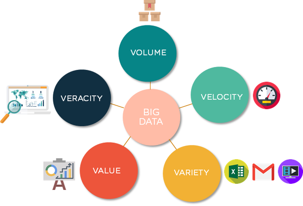

Advantages Of Big Data Processing
(i) Volume – The name Big Data itself is related to a size which is enormous. Size of data plays a very crucial role in determining value out of data. Also, whether a particular data can actually be considered as a Big Data or not, is dependent upon the volume of data. Hence, 'Volume' is one characteristic which needs to be considered while dealing with Big Data.
(ii) Variety – The next aspect of Big Data is its variety.
Variety refers to heterogeneous sources and the nature of data, both structured and unstructured. During earlier days, spreadsheets and databases were the only sources of data considered by most of the applications. Nowadays, data in the form of emails, photos, videos, monitoring devices, PDFs, audio, etc. are also being considered in the analysis applications. This variety of unstructured data poses certain issues for storage, mining and analyzing data.
(iii) Velocity – The term 'velocity' refers to the speed of generation of data. How fast the data is generated and processed to meet the demands, determines real potential in the data.
Big Data Velocity deals with the speed at which data flows in from sources like business processes, application logs, networks, and social media sites, sensors, mobile devices, etc. The flow of data is massive and continuous.
(iv) Variability – This refers to the inconsistency which can be shown by the data at times, thus hampering the process of being able to handle and manage the data effectively.
